Repère visuel historique
Repère visuel historique de Protégeons notre Littoral.
Usage : histoire · Source : Archive PNL
Archives publiques sélectionnées
Cette page rassemble progressivement des repères visuels et supports publics liés à l’histoire de Protégeons notre Littoral. Elle contribue à préserver la mémoire institutionnelle de l’ONG tout en respectant la confidentialité des documents internes et des personnes.
Repères visuels historiques
Repère visuel historique de Protégeons notre Littoral.
Usage : histoire · Source : Archive PNL
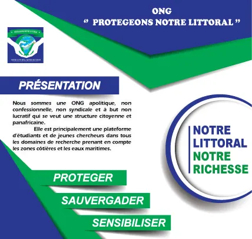
Ancien support de présentation recadré, sans zone de contact visible.
Usage : identité · Source : Archive PNL
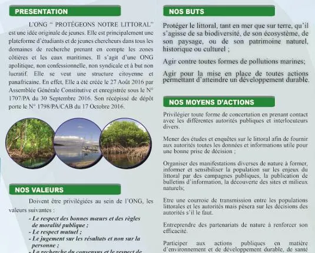
Support historique autour des messages éduquer, former et sensibiliser.
Usage : sensibilisation · Source : Archive PNL
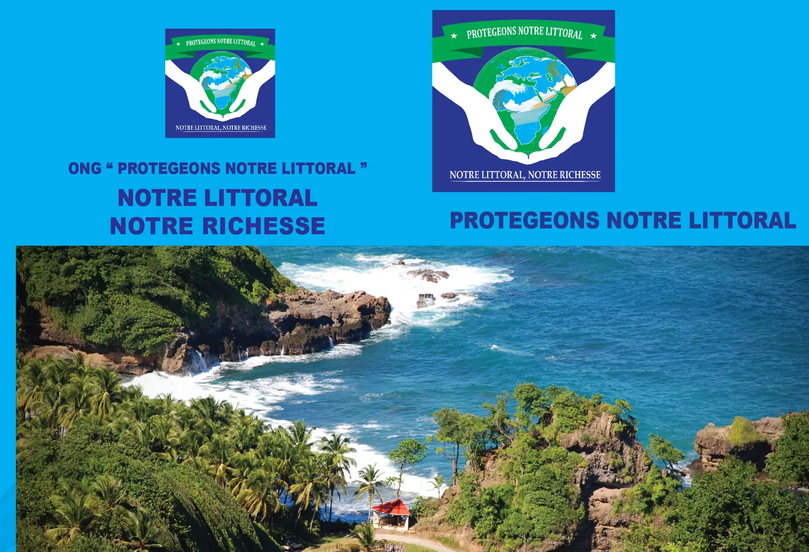
Ancien support institutionnel recadré autour du slogan historique de l’ONG.
Usage : mémoire · Source : Archive PNL
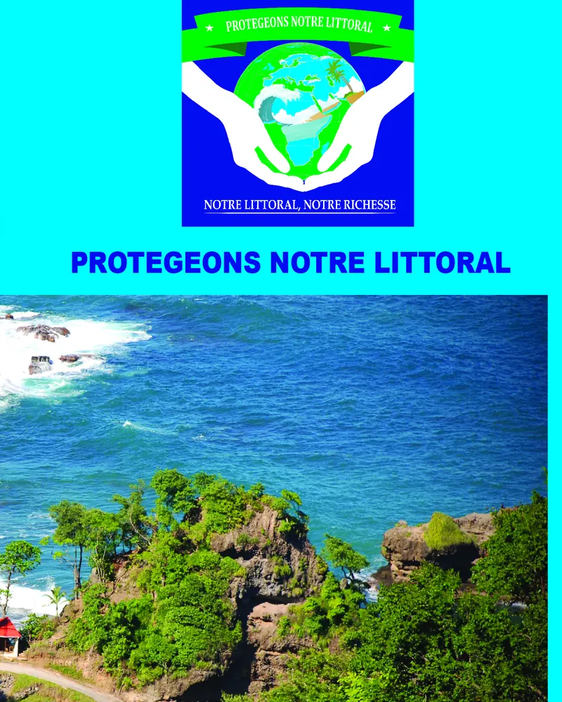
Extrait recadré d’un ancien support PNL, sans coordonnées ni zone administrative visible.
Usage : histoire · Source : Archive PNL
Supports de sensibilisation
Les supports présentés ici sont des copies web recadrées. Les zones contenant coordonnées, signatures, contacts, listes ou informations sensibles ne sont pas publiées.
Ancien support de présentation recadré, sans zone de contact visible.
Usage : identité · Source : Archive PNL
Support historique autour des messages éduquer, former et sensibiliser.
Usage : sensibilisation · Source : Archive PNL
Ancien support institutionnel recadré autour du slogan historique de l’ONG.
Usage : mémoire · Source : Archive PNL
Extrait recadré d’un ancien support PNL, sans coordonnées ni zone administrative visible.
Usage : histoire · Source : Archive PNL
Second lot d’archives
Cette sélection complémentaire rassemble des supports publics de Protégeons notre Littoral préparés pour une consultation ouverte. Les documents contenant des informations personnelles, contacts, signatures ou éléments internes ne sont pas publiés bruts.
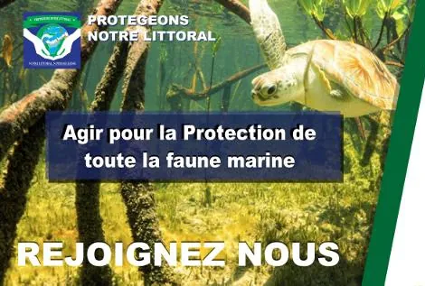
Archive de sensibilisation autour de la protection de la faune marine.
Catégorie : support historique · Source : Archive PNL
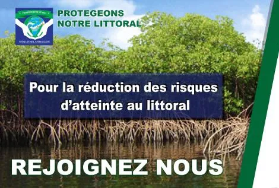
Archive de sensibilisation sur la réduction des risques d’atteinte au littoral.
Catégorie : support historique · Source : Archive PNL
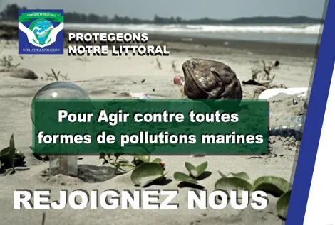
Archive de sensibilisation sur les pollutions marines.
Catégorie : support historique · Source : Archive PNL
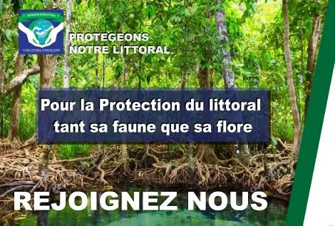
Archive de sensibilisation sur la protection du littoral, de la terre au rivage.
Catégorie : support historique · Source : Archive PNL
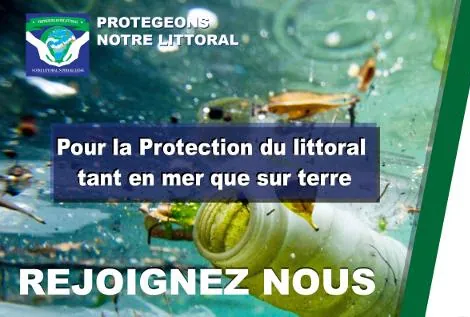
Archive de sensibilisation sur la protection du littoral en mer comme sur terre.
Catégorie : support historique · Source : Archive PNL
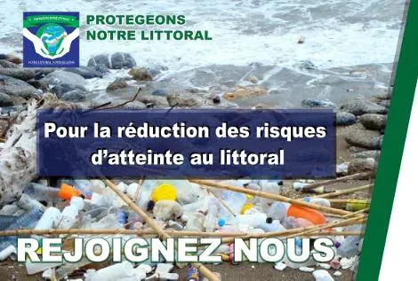
Archive de sensibilisation sur les pressions et risques littoraux.
Catégorie : support historique · Source : Archive PNL
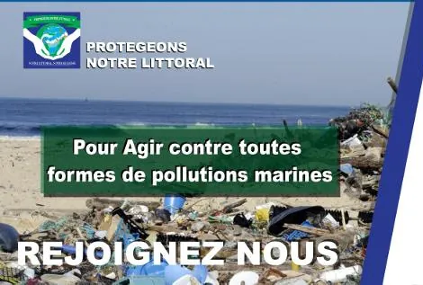
Archive de sensibilisation invitant à agir contre les pollutions marines.
Catégorie : support historique · Source : Archive PNL
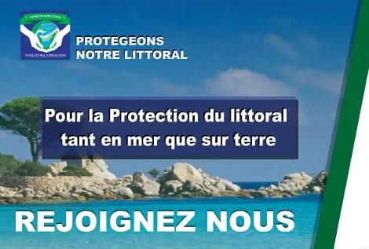
Archive de sensibilisation autour de la protection des espaces littoraux.
Catégorie : support historique · Source : Archive PNL
Les archives de l’ONG comprennent aussi des documents internes, administratifs ou nominatifs qui ne sont pas publiés bruts. Ces documents contribuent à la mémoire institutionnelle, mais leur diffusion suppose une sélection, une anonymisation ou une transformation en synthèse publique.
Les supports historiques sont complétés par une chronologie des activités, villes et repères issus des archives PNL.
Consulter la chronologieDernière mise à jour : juin 2026